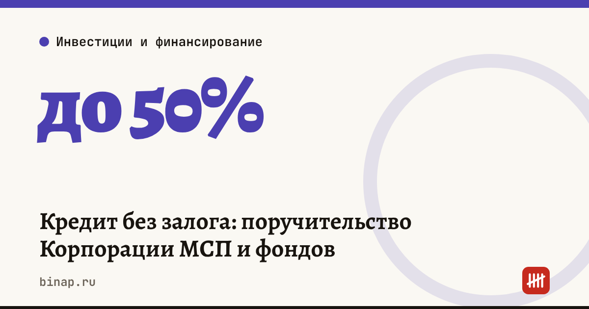

Кредит без залога: поручительство Корпорации МСП и фондов

Кредит совсем без обеспечения малому бизнесу дают редко, но недостающий залог можно заменить поручительством. Бесплатное для заёмщика зонтичное поручительство Корпорации МСП покрывает до 50% кредита. Платное поручительство регионального гарантийного фонда даётся на сумму до 25 млн ₽, а в отдельных регионах до 100 млн ₽.
Коротко
- Зонтичное поручительство Корпорации МСП покрывает до 50% кредита, максимум 1 млрд ₽, срок до 10 лет; комиссию платит банк (по данным «Клерка», 14.10.2026).
- Его оформляет банк-партнёр, отдельную заявку в Корпорацию подавать не нужно.
- Региональные гарантийные организации (РГО) дают поручительство до 25 млн ₽ по поточным технологиям, в отдельных регионах до 100 млн ₽ (ЦБ).
- Если банк не участвует в зонтичном механизме, спросите про независимую гарантию Корпорации МСП или поручительство РГО — они платные.
- Нужен статус МСП в реестре, без банкротства и просрочек перед банком; по данным блога банка на «Клерке», основной ОКВЭД 47 (розничная торговля) для зонтичного механизма не подходит.
Сроки, изменения и разборы для ИП и самозанятых — каждое утро в Telegram и MAX. Подпишитесь, чтобы не пропустить.
Три способа заменить залог
| Инструмент | Покрытие | Кто платит | Как получить |
|---|---|---|---|
| Зонтичное поручительство Корпорации МСП | до 50% кредита, до 1 млрд ₽ | банк | банк-участник оформляет сам |
| Независимая гарантия Корпорации МСП | до 50% кредита | заёмщик, комиссия | через банк, если он не в зонтичном механизме |
| Поручительство РГО | по условиям фонда, до 25 млн ₽ (в отдельных регионах до 100 млн ₽) | заёмщик, комиссия | через банк-партнёр фонда вашего региона |
По данным «Клерка», в зонтичном механизме участвуют Сбер, ВТБ, Альфа-Банк, Т-Банк, МСП Банк, ПСБ, Совкомбанк, Точка и другие банки; с октября 2021 года им воспользовались более 105 тыс. субъектов МСП. Размер комиссий РГО и независимой гарантии уточняйте у фонда и Корпорации МСП: на странице ЦБ, обновлённой в 2026 году, их нет.
Сколько стоит поручительство
Формула: комиссия в год = сумма поручительства × ставка комиссии.
Пример (расчёт редакции, цифры условные). Кредит 6 млн ₽, залога на 3 млн ₽.
| Вариант | Сумма поручительства | Комиссия | Стоимость в год |
|---|---|---|---|
| Зонтичное, 50% | 3 000 000 ₽ | платит банк | 0 ₽ для заёмщика |
| РГО, 70% при комиссии 2% годовых | 4 200 000 ₽ | 2% | 84 000 ₽ |
Добавьте комиссию к процентам по кредиту и сравните полную стоимость с другими предложениями — как это сделать, в разборе кредит для малого бизнеса: как сравнить предложения. Если деньги нужны на технику, сравните с лизингом.
Сравнить условия кредита для бизнеса: ссылка
Риски и что проверить в договоре
- Поручительство не уменьшает ваш долг. Если фонд или Корпорация заплатят банку за вас, они потребуют эти деньги с вас.
- Личное поручительство владельца. Банк может попросить его дополнительно — тогда отвечать придётся личным имуществом.
- Комиссия за весь срок. Узнайте, платится ли комиссия РГО или гарантии разово или ежегодно и пересчитывается ли при частичном погашении.
- Ковенанты. Проверьте условия, при которых банк может потребовать досрочного погашения: падение оборотов, перевод выручки в другой банк, новые кредиты.
Что сделать сейчас
- Проверьте, что вы есть в реестре МСП и у вас нет просрочек перед банком.
- Спросите банк, участвует ли он в зонтичном механизме, и подходит ли ваш основной ОКВЭД.
- Если не участвует — спросите про независимую гарантию Корпорации МСП или поручительство РГО вашего региона и попросите расчёт комиссии.
- Сравните полную стоимость кредита с поручительством в 2–3 банках.
Частые вопросы
Поручительство Корпорации МСП платное? Зонтичное — нет, комиссию платит банк. Независимая гарантия Корпорации и поручительство РГО — платные.
Можно ли получить кредит без залога совсем? Поручительство закрывает часть риска банка — до 50% по зонтичному механизму. Нужно ли обеспечение на остальную сумму, решает банк.
Где найти фонд своего региона? Список региональных гарантийных организаций есть на сайте Корпорации МСП.